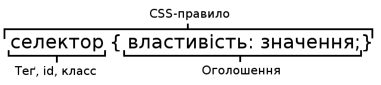

спеціальна мова (мова стилів), за допомогою якої описують вигляду документів (як і де відображати елементи веб-сторінки),
написаних мовами розмітки даних. Найчастіше CSS використовується для документів, котрі розмічені мовою HTML, XHTML та XML.
Після того, як Пан на ім'я Tim Berners Lee винайшов World Wide Web, мова HTML, деякий час, використовувалася тільки для визначення структури вмісту сторінки.
Розробники могли тільки помічати текст: "це - заголовок" чи "це - параграф", використовуючи HTML-теги. Трішки пізніше почали з’являтися дуже специфічні теги.
Оформлення веб-сторінок здійснювалося безпосередньо всередині вмісту документа. Ці теги відрізнялися від інших, тим, що вони визначали дизайн, а не структуру, а у більшості інших
тегів були такі властивості як color чи border.
Таке прагнення до збільшення стилістичних можливостей призвело до того, що оригінальні теги структурування стали все більше застосовуватися для дизайну сторінок, замість структурування тексту.
Багато нових тегів підтримувалися тільки одним браузером. "Вам потрібен браузер X, щоб переглядати цей ресурс" - така відмова стала звичайним явищем на web-сайтах.
Тоді ж, в якийсь момент код сторінки став настільки громіздким і нечитабельним, що стало зрозуміло, що це гузно, і з часом, цього ніхто не буде використовувати.
Тоді було прийнято рішення розділити структуру сторінки (HTML) та її візуальне оформлення (CSS). Саме після цього розділення потреба в в стилістичних елементах відпала і потихеньку такі теґи та атрибути
застарівають і розробники їх видаляють видаляють.
Зараз HTML в чистому вигляді має дуже обмежений набір інструментів, що не дозволяє вирішувати ті чи інші дизайнерські та функціональні замисли веб-ремісників.
Ну ось хоч би, до прикладу, взяти початкове запитання всіх веб-ремісників "Як прибрати підкреслення у посиланні?" або "Як змінити стиль посилання, при наведенні на нього курсора?"
За допомогою лише одного HTML такого зробити не вдасться!. А таких запитань безліч. Тут й приходить на допомогу CSS, який вирішує більшість завдань, що відносяться до стильового оформлення сторінки.
Одна з головних переваг використання CSS - це можливість розділити зміст сторінки від її оформлення. Таке розділення дозволило покращити сприйняття та доступність змісту,
забезпечити більшу гнучкість та контроль за відображенням змісту в різних умовах, зробити зміст більш структурованим та простим, прибрати повторення та ін. Власне це ж і була основна мета створення цієї технології.
Що дає використання CSS:
Відображати один і той же документ в різних стилях.
Декілька дизайнів сторінки для різних пристроїв. Наприклад, на екрані дизайн буде розрахований на велику ширину, під час друку меню не виводитиметься, а на смартфоні меню буде внизу, під вмістом.
Зменшення часу завантаження сторінок сайту за рахунок перенесення правил відображення в окремий CSS-файл. В цьому випадку браузер завантажує тільки структуру документа і дані, що зберігаються на сторінці,
а стильові правила цих даних завантажуються браузером тільки один раз і кешуються. Простота подальшої зміни дизайну. Не потрібно правити кожну сторінку, а лише змінити CSS-файл.
Додаткові можливості оформлення. Наприклад, за допомогою CSS-розмітки можна зробити так, щоб меню було завжди видно при скролінгу сторінки, або прибрати підкреслення у посилань.
Дозволяє створювати складну і пропрацьовану техніку дизайну.

Структура правила в CSS
Всі CSS-правила складаються з селектора і блоку оголошень (укладеного у фігурні дужки). Всередині блоку оголошень може знаходитися одне або кілька оголошень, розділених крапкою з комою. Оголошення
- це рядок, складений з css- властивості та її значення.
Кожне правило починається з селектора (покажчика), що вказує на ті html-елементи, до яких ми будемо застосувати css-правило. У блоці оголошень відбувається найцікавіше - ми встановлюємо правила відображення
обраних нами елементів, визначаємо їх властивості - розмір, колір, грані, поля, положення на екрані і т.д.
Висновок
Отже, HTML використовується для структурування вмісту сторінки, а CSS - для форматування цього структурованого вмісту. А сукупності HTML та CSS дозволяють творити з документом неймовірні
речі і поступово вивчаючи CSS ти почнеш переконуватися в цьому. Інколи створити деякий функціонал, набагато простіше за допомогою CSS аніж на JavaScript.